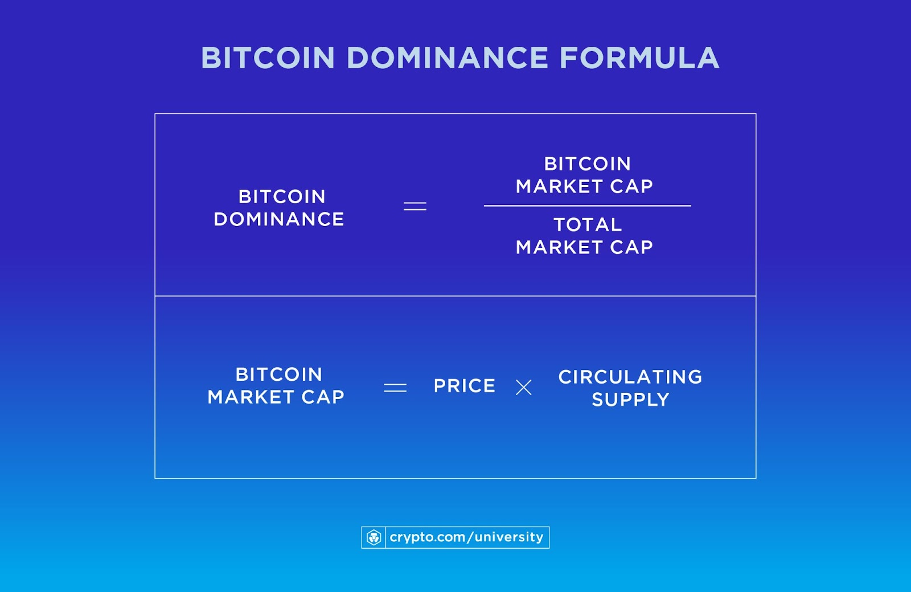
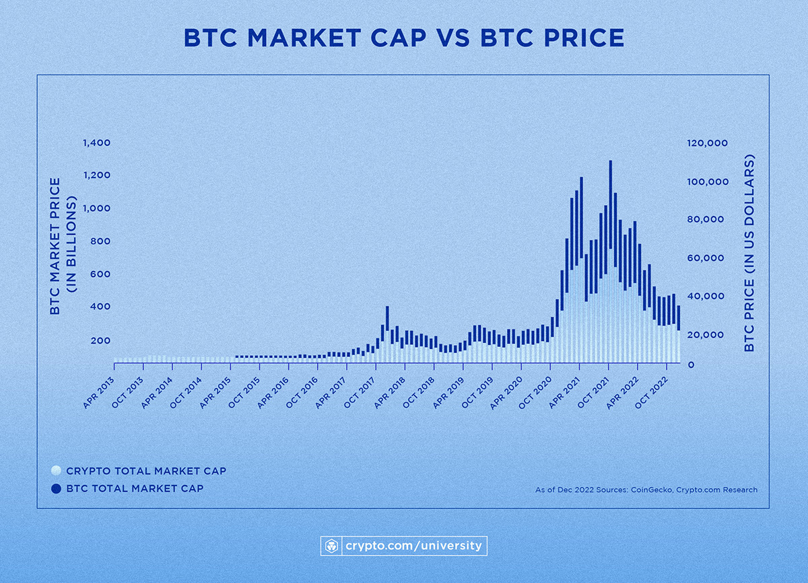
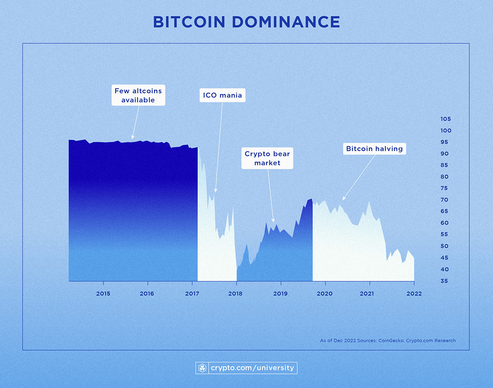

비트코인 지배력이란?
초보자를 위한 이번 가이드에서는 비트코인 지배력의 의미와 측정 방법, 거래에서 활용하는 방안을 살펴보며 가상자산에 관한 지식을 다듬어 봅니다.
핵심 내용
소개
간단히 말해 비트코인 지배력이란 비트코인 시가총액이 전체 가상자산 시가총액에서 차지하는 비율을 가리킵니다. 그러나 가상자산을 처음 접하는 사람들은 이것이 정확히 무슨 의미인지, 어떻게 사용되는지 모를 수 있습니다. 지금부터 이 중요한 지표에 대해 자세히 알아봅니다.
비트코인 지배력이란?
좀 더 자세히 설명하자면, 비트코인 지배력은 비트코인의 현재 시가총액을 전 세계 가상자산의 시가총액으로 나눈 퍼센트 값입니다. 예를 들어 이 글을 쓰고 있는 시점에 비트코인의 시가총액은 5,390억 달러(USD)이며 전 세계 가상자산 시가총액은 1조 1,600억 달러입니다. 5,390억을 1조 1,600억으로 나누면 46%가 나오는데, 이것이 가상자산 시가총액에서 비트코인이 차지하는 비율입니다.
비트코인 시가총액은 유통 중인 비트코인 수를 현재 시장 가격으로 곱하여 계산합니다. 현재 약 1,930만 개의 비트코인이 유통 중이며(최대 공급량은 2,100만 개) 27,800달러에 거래되고 있습니다. 따라서 작성 시점의 비트코인 시가총액은 약 5,390억 달러입니다.
가상자산 트레이더는 비트코인 지배력을 어떻게 사용하는가?
이 비율은 비트코인과 나머지 가상자산 시장과의 관계에서 나온 값입니다. 이는 가상자산 트레이더가 시장의 상태를 파악하고 위험을 관리하며 일반적으로 다른 데이터 세트와 연계해 잠재적인 추세와 거래 기회를 발견하는 지표로 사용합니다.
기존 데이터를 살펴보면 가상자산 시장의 상당 부분이 대체로 비트코인이 취하는 형태와 방향을 따르는 경향이 있습니다(아래 다이어그램 참고). 비트코인은 전체 가상자산 시가총액의 대부분을 차지하고 있기 때문에 지금까지 대부분의 알트코인과 긍정적이고 깊은 상관관계를 맺어 왔고 결과적으로 알트코인은 비트코인의 가격 변동에 급격하게 반응할 수밖에 없습니다. 이 때문에 비트코인 지배력이 알트코인 시장의 추세를 이해하는 데 도움이 될 수 있다고 주장하는 이들도 있습니다.
비트코인 지배력은 언제 변하는가?
비트코인 지배력의 변화에 영향을 미치는 요소를 이해하기 위해 이 비율을 계산하는 데 사용되는 비트코인 시가총액과 전 세계 가상자산의 시가총액을 살펴보겠습니다.
갈수록 알트코인 수가 증가하면서 가상자산 시장이 다양해지면 비트코인 지배력이 점차 감소할 수 있습니다. 그러나 전체 알트코인 시장의 실적에 따라 비트코인의 지배력은 시간이 지나면서 바뀔 수 있습니다. 바로 이러한 중간 변화와 변동이 트레이더들이 관심을 갖는 부분입니다. 왜냐하면 이것이 시장의 현재 단계를 보여주는 역할을 해서 다양한 지표들을 고려할 때 포지션을 잡는 데 도움이 되기 때문입니다.
시간에 따른 비트코인의 지배력
비트코인은 2009년 처음 출시될 때 가상자산 시가총액의 약 99%를 차지했습니다. 당시 가상자산 시장은 지금보다 작았고 다른 가상자산도 많지 않았습니다. 그로부터 4년 후에도 비트코인은 94%의 지배력을 유지하고 있었는데 시장에서 비트코인과 경쟁하는 알트코인이 소수였기 때문입니다. 이더리움이 2015년에 가상자산 시장에 등장했을 때도 비트코인의 지배력은 여전히 90% 수준을 유지했습니다.